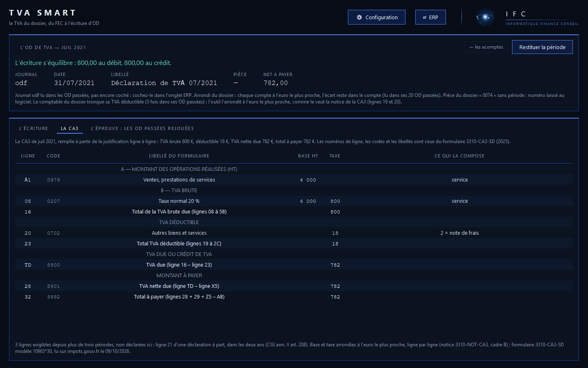
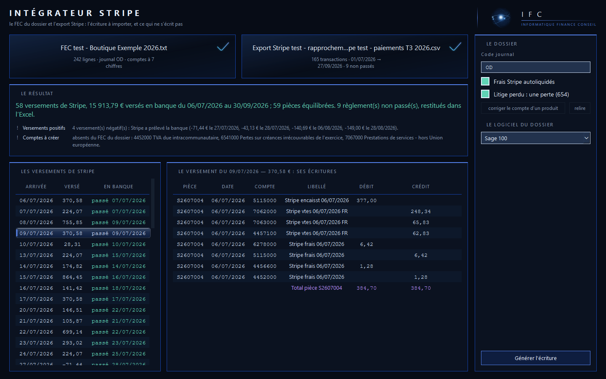

Outils
Des outils autonomes, un par tâche, qui vont au bout du travail. Ils tournent sur votre poste : rien ne quitte le poste.
Logiciel Windows
TVA Smart — deux FEC, il calcule. C’est tout.
- Vous déposez le FEC de l’exercice et celui du précédent
- Il calcule la TVA de la période à déclarer
- Il rend la CA3 ou la CA12 remplie, et l’OD de TVA prête à importer dans 31 logiciels comptables
- Chaque montant est justifié, ligne à ligne

Logiciel Windows
Intégrateur Stripe — le FEC, l’export Stripe : l’écriture.
- Vous déposez le FEC du dossier et l’export de Stripe
- Il compose l’écriture de chaque versement : ventes et TVA, frais Stripe, remboursements, litiges
- Il la rend au format de votre logiciel, parmi 31, avec l’Excel qui la justifie
- Les règlements non passés sont restitués à part
